Pixel Place 这是什么？ Pixel Place 是一个受 r/place 和在 Tezos 区块链上运行的百万美元主页启发的社会实验。这是一个任何人都可以绘制的 64x64 像素画布。 它是如何工作的？ 站点上的画布显
Pixel Turtles 互联网上最受欢迎的吉祥物加入了 Pixelated NFT 空间。 每个 Turtle 都是时髦特征的独特组合，并使用自定义算法生成，以确保没有两个 Turtle 是相同的。共有 10.000 只 Turtle 可用。 最后一
PixelBeasts (Beastopia) PixelBeasts 是 10,000 个独特的 NFT 收藏品，每个 24x24 像素由艺术家和 VC，Yohei Nakajima 制作。所有权提供了对 Beastopia 的访问 - 一种不断发展的社交体验，包括活动、游戏等 - 以及一
PixelChain Pixelchain 是一个去中心化的应用程序，它允许用户创建 32x32 像素艺术并将其 100% 存储在区块链上，它将永远存在。每件艺术品都是独一无二的，并被编码到 ERC-721 令牌中。立即
PixelDeMNs NaTaS 网络中长期运行的基于 Tezos 的 DeFi NFT 系列 PixelDeMN 的主页 查看您的 PixelDeMN 收藏和当前的代币收入以及您持有的 NaTaS 网络的其他信息。NaTaS Token 和 DeMN Token 信息也可以在这里找到
PixelWall PixelWall 是一个不断变化的、协作的、完整的链上像素墙 我想将 PixelWall 与我自己的区块链项目集成 PixelWall 可以成为任何项目的有趣补充，同时还带来一些其他潜在功能，例如代
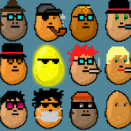 Potato Punks 什么是 Potato Punks？ 赠品。奖金。奖池 3000+ MATIC。 Potato Punks 是 150 件手工制作的数字收藏品的精选集合，这些收藏品存储在 Polygon 区块链上。 这是对密码朋克运动早
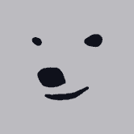 Praying Bear 什么是 Praying Bear？ Praying Bear祈祷熊是 10000 个独特的不可替代代币集合 这只祈祷以太的熊出生在北极的神秘极光中 可能有些不是… 还有一些特别
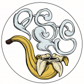 Primate Social Society 什么是 Primate Social Society灵长类社会社会？ Primate Social Society灵长类社会协会是一个复杂的猿化身集合。灵感来自我们在 ApeSwap 的 Defi 空间中的 Degenerate 兄弟姐妹。我们
Prime Ape Planet PAP 什么是 Prime Ape Planet PAP ？ 在不到 24 小时的时间里，Prime Ape Planet 的 Discord 会员人数达到了惊人的 100,000 多名。这在 NFT 领域是看不到的。同时，团队非常踏实；我们在这里是长
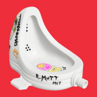 R. Mutt R. Mutt 是 Marcel Duchamp 的著名作品 Fountain 的 2,048 个独特、可模因、3-D 和完全交互的 NFT 模仿的集合。 与 NFT 一样，马塞尔·杜尚的《喷泉》永远改变了公众对艺术的看法。 一个原
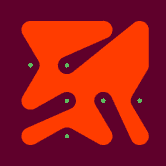 Rings Genesis 激发运动灵感的系列。 这个标志性系列由艺术教授和平面艺术家尼克·库德 (Nick Kuder) 创作，是一系列正在进行的艺术作品。它最初于 2019 年 2 月创建，使用系统生成系
Roaring Leaders Roaring Leaders 是以太坊区块链上 10,000 个可生成 NFT 的独特通缩集合。该系列包括首个 NFT 共同基金，称为 Leaders' Fund。 我们的艺术作品包括约 200 多种手工制作的特征，以捕捉定
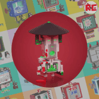 RoboCosmic RoboCosmic 是 11,111 个随机生成的 NFT 的数字集合，每个都不同，位于以太坊区块链上。 我们正在为即将到来的社区开放一个新的角色/空间。作为免费薄荷糖的发布，我们需
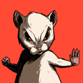 Roborovski NFT SYA Concept 的 Roborovski NFT 系列。 由好莱坞级企业 SYA Concept & Caravan 工作室发起的 NFT 项目。基于 Dev Patel 和 Tilda Cobham-Hervey 创建的角色。 了解一只名叫 Roborovski 的小仓鼠的起源故事和最终总体规划。发现这个
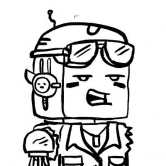 Robotos Official Robotos 是由 Pablo Stanley 设计并铸造为 NFT 的机器人角色集合。它们由各种金属服装、锡面、数码配件、上衣、脸、背包、武器和颜色构成。得到你自己的！ Robotos 是由Pablo
The Aquatica Collection 由花式水晶。 一系列独特的艺术品，由流动的丙烯酸和水墨画创作而成，然后经过手工细节和数字处理。 Aquatica 是对自然界中发现的生物形态和纹理的庆祝，特别是
The Atari Pluriform - by The Fabricant 经过 雅达利 The Fabricant 与 Atari 合作设计的 Pluriform 系列倡导性别多样性和数字时尚空间的包容性，我们可以在其中超越物理世界的限制。 凭借电子竞技和游戏的这种敏感性，我
The Auerbach Collection. The Process Series. Captured Moment：Master’s Process 将包含两个 NFT drop：一个用于 Process 照片，它揭示了 Master 作品制作过程中所涉及的微妙幕后构造，另一个用于
There is Nothing New Under The Sky 当人们摆脱自己陷入的恶性循环时，生活的单调就会结束。只有在那一刻，才能质疑天底下是否有新事物。生命不止于天空之下。于是，我们冲破城墙，回归自
World Of Women 一组独特、酷、多样的女性，准备在 NFT 空间留下印记！ 10,000 个随机生成的各种稀有数字收藏品作为 ERC-721 令牌生活在以太坊区块链上，并托管在 IPFS 上。WoW 的愿景是
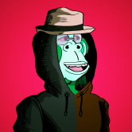 Optimistic Apes 我们相信 Optimism 将成为以太坊未来的重要组成部分，因此我们希望成为 Optimism 上首批 NFT 收藏之一。我们称这个项目为“乐观猿”。 如果您是 Optimism 的长期用户，您可能已经注
Otherdeed for Otherside Otherdeed 是在 Otherside 取得土地的关键。每个都有独特的环境和沉积物混合 - 有些拥有资源，有些拥有强大的文物。在极少数情况下，Koda 漫游。 Otherside 是一个游戏化的、可
Outcastverse Founders Pass 450 名 OUTCASTVERSE 创始人通过。将分三组发布，每组 150 个，每组 1 - 450 个 3 个 NFT 系列：OUTCAST、GURDIAN、X。每个系列都包含 4000 件以程序方式生成的独特
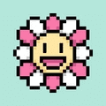 Murakami.Flowers Official Murakami.Flowers 是艺术家村上隆的代表作品——花卉，以点状艺术的形式表现出来的日本电视游戏创作的作品。该作品正在以数字108为关键词进行开发；108个背景和
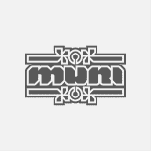 MURI by Haus MURI 是由 haus 创作的 10.000 版系列，在夜城中有着深刻的故事。六种独特的 DNA，通过 MURIVERSE，我们将提供 6 个独特的 DNA + 额外的特征和特征。下面是 3
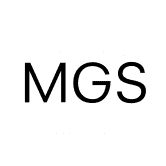 Mutant Garden Seeder Mutant Garden Seeder 由艺术家 Harm van den Dorpel 于 2021 年与 Folia 合作发布的 512+1 个可生成的独特以太坊 NFT 组成。 每个区块号只能铸造一个突变体。这个选择的出生区块的交易哈希被用作确定
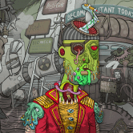 MUTANT PUNKS CITY MUTANT PUNKS CITY 是一个 NFT 集合，包含 11111 个独特的 Mutant Punks，其中包含数百个元素，灵感来自原始 Cryptopunks.Ethereum 区块链。价格：0.08 ETH 每件艺术品都是独一无二的，非常细致
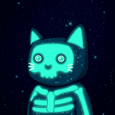 MutantCats Mutant Cats 是第一个购买和细分 Cool Cats 以分发给其成员的 DAO。9,999 只猫因以太坊区块链上的疾病而发生变异。通过质押获得 $FISH 被动收入并拥有 Cool Cats 保险库的一
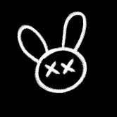 My Pet Hooligan 来自 AMGI Studios 的交互式 NFT 体验。888 个宠物流氓的 NFT 集合——独特的 3D 角色在以太坊区块链上构建，具有各种独特的特征。您的 NFT 不仅具有实用性，还将在我们不
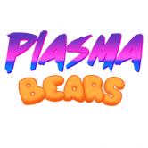 Plasma Bears Plasma Bears 是一款关于收集、建造和冒险的游戏。但是，该项目在 Loom 侧链上运行并已停止。Blockade Games 可能会重振该项目，但目前这些熊的部分是过去的收藏
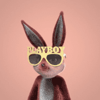 Playboy Rabbitars Official 花花公子兔子是一个由 11,953 只独特的、不可替代的兔子组成的以兔子为主题的文明，灵感来自花花公子的肖像画、遗产和传说。在元节的背景下，兔子是作为 ERC-721 代
ABCMETA-VOUCHER 使用您的 NFT 赚取奖励 NFT 市场，交易您的 NFT 并赚取利润。通过Bid-to-Earn赚取USDT。 Mint ABCMETA-ID - 您独特的像素化 NFT。竞标 ABCMETA-LA